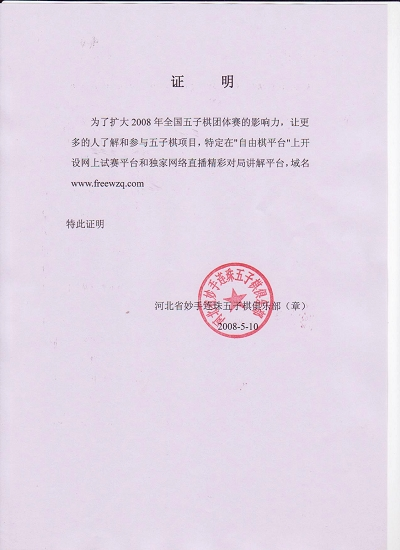

2008年全国五子棋团体赛网上直播信息
#1 2008年全国五子棋团体赛网上直播信息 作者：有志青年 发表时间：2008-5-12 21:22:28
2008年全国五子棋团体赛的比赛实况将在“自由棋在线对战平台”独家网络直播！
今日和“自由棋在线对战平台”取得联系，爱五子棋网将对此次直播做转播。【爱五子棋网的转播主要内容为转录自由棋在线对战平台中的讲解以作长期保存，转播时限定15人进入，更多内容可以前往直播教室】
自由棋在线对战平台的地址是：http://www.freewzq.com，该平台基于flash核心打造，无需下载客户端即可游戏。目前支持多种五子棋对局规则。
#2 Re:2008年全国五子棋团体赛网上直播信息 作者：雅匪 发表时间：2008-6-6 21:14:29
请问几日几点直播
直播地址和日程
15人的名额怎么获取
#3 Re:2008年全国五子棋团体赛网上直播信息 作者：潇洒 发表时间：2008-6-6 22:03:24
看谁比赛的时候来得早吧
#4 Re:2008年全国五子棋团体赛网上直播信息 作者：潇洒 发表时间：2008-6-6 22:04:02
7号开始比，就是明天噢#5 Re:2008年全国五子棋团体赛网上直播信息 作者：雅匪 发表时间：2008-6-6 22:25:21
请问几点直播
直播日程呢
#6 Re:2008年全国五子棋团体赛网上直播信息 作者：潇洒 发表时间：2008-6-6 22:57:18
第一轮对阵表

#7 Re:2008年全国五子棋团体赛网上直播信息 作者：雅匪 发表时间：2008-6-7 0:56:21
谢谢啊
俺今来得最早,俺最前面放了板凳噢
#8 Re:2008年全国五子棋团体赛网上直播信息 作者：励精 发表时间：2008-6-7 8:44:39
请各位注意一点：
中国棋院组织的连珠比赛是按照中国棋院制定的《中国五子棋竞赛规则》进行的，不是五目比赛。
自由棋的作者以宣传"无禁"为主,并强烈抵毁有禁手的"连珠"。
#9 Re:2008年全国五子棋团体赛网上直播信息 作者：雅匪 发表时间：2008-6-7 9:08:19
开始没
地址是
#10 Re:2008年全国五子棋团体赛网上直播信息 作者：潇洒 发表时间：2008-6-7 9:46:45
▓天▓ (171890544) 2008-06-07 09:00:19
全团赛直播公告
7号早上 9.15分正式开始直播
中国棋院主办的“诺亚人力资源杯”2008年诺亚人力资源杯全国团体赛将于6月7号至9日在石家庄市举办， 自由棋平台（http://www.freewzq.com）将进行在线现场直播.
直播地点:讲课室->讲课室一->1桌至4桌,如果临时加播台次,将临时通知.
http://www.freewzq.com/gameWzq.htm#TableID=Room_8&TableIndex=1
http://www.freewzq.com/gameWzq.htm#TableID=Room_8&TableIndex=2
http://www.freewzq.com/gameWzq.htm#TableID=Room_8&TableIndex=3
http://www.freewzq.com/gameWzq.htm#TableID=Room_8&TableIndex=4
注:由于平台承受压力所限,只能容纳30名游客进入.您也可以从大厅(http://www.freewzq.com登陆进入)
直播的时候,来自四川的高手妙手俱乐部兰志仁三段将为您作现场讲解!
天逸乄棋社小妖<y-n-s@163.com> 2008-06-07 09:22:03
全团赛河北妙手VS炫飞2队
龚胜VS段然直播室
http://www.freewzq.com/gameWzq.htm#TableID=Room_8&TableIndex=4
全团赛河北妙手VS炫飞2队
马少红VS樊毅默
http://www.freewzq.com/gameWzq.htm#TableID=Room_8&TableIndex=1
全团赛河北妙手VS炫飞2队
黄金贤VS袁金丰
http://www.freewzq.com/gameWzq.htm#TableID=Room_8&TableIndex=2
全团赛河北妙手VS炫飞2队
谭鑫麟VS张埕
http://www.freewzq.com/gameWzq.htm#TableID=Room_8&TableIndex=3
马上要开始了，请大家关注
#11 Re:Re:2008年全国五子棋团体赛网上直播信息 作者：沈毅 发表时间：2008-6-7 10:23:36
引用：
原文由 励精 发表于 2008-6-7 8:44:39 :请各位注意一点：
中国棋院组织的连珠比赛是按照中国棋院制定的《中国五子棋竞赛规则》进行的，不是五目比赛。
自由棋的作者以宣传"无禁"为主,并强烈抵毁有禁手的"连珠"。
无论如何，自由棋对于让大家及时了解到赛场内的动向是很有帮助的，我们首先应该感谢他。
#12 Re:2008年全国五子棋团体赛网上直播信息 作者：五子酷 发表时间：2008-6-7 11:27:26
比赛完了把结果公布下吧
#13 Re:2008年全国五子棋团体赛网上直播信息 作者：五子酷 发表时间：2008-6-7 12:30:20
第二轮对阵:1河南五子棋代表队 VS 浙江五子棋代表队
2上海市3队 VS 上海市1队
3北京那威俱乐部队 VS 江苏五子棋代表队1队
4京系1队 VS 安徽连珠代表队
5上海市2队 VS ≮炫飞☆棋社≯2队
6河北五子棋代表队 VS ≮炫飞☆棋社≯1队
7京系二队 VS 江苏五子棋代表队2队
8河北保定五子棋1队 VS 北京联队
9天津五子棋代表队 VS 河北保定五子棋2队
10石家庄宁源小学基地队 VS 河北科技大学代表队
11河北邯郸五子棋代表队 VS 秦皇岛快乐连珠队
#14 Re:2008年全国五子棋团体赛网上直播信息 作者：潇洒 发表时间：2008-6-7 15:44:41
第二届全国五子棋团体赛第三轮对阵表台号 姓名 积分 比赛结果 姓名 积分
1 浙江五子棋代表队, (1) [2] : 北京那威俱乐部队, (4) [2]
2 上海市1队, (3) [2] : 上海市2队, (6) [2]
3 安徽连珠代表队, (5) [1.5] : 北京五子棋协会京系二队, (18) [1.5]
4 ≮炫飞☆棋社≯1队, (7) [1.5] : 北京五子棋协会京系1队, (10) [1.5]
5 河北科技大学代表队, (21) [1] : 河南五子棋代表队, (8) [1]
6 北京五子棋协会北京联队, (19) [1] : 上海市3队, (9) [1]
7 江苏五子棋代表队1队, (11) [1] : 天津五子棋代表队, (20) [1]
8 ≮炫飞☆棋社≯2队, (13) [1] : 河北邯郸五子棋代表队, (22) [1]
9 河北保定五子棋2队, (15) [0] : 河北五子棋代表队, (2) [0]
10 江苏五子棋代表队2队, (12) [0] : 石家庄宁源小学基地队, (16) [0]
11 秦皇岛快乐连珠队, (17) [0] : 河北保定五子棋1队, (14) [0]
#15 Re:2008年全国五子棋团体赛网上直播信息 作者：五子酷 发表时间：2008-6-7 15:56:48
楼上的好快哈。
#16 Re:2008年全国五子棋团体赛网上直播信息 作者：五子酷 发表时间：2008-6-7 18:47:26
第四轮对阵安排如下：1北京那威俱乐部队[3] ＶＳ上海市1队[2.5]
2上海市2队[2.5] ＶＳ≮炫飞☆棋社≯1队[2.5]
3浙江五子棋代表队[2] ＶＳ安徽连珠代表队[2.5]
4河南五子棋代表队[2] ＶＳ江苏五子棋代表队1队[2]
5上海市3队[2] ＶＳ≮炫飞☆棋社≯2队[2]
6北京五子棋协会京系1队[1.5] ＶＳ北京五子棋协会京系二队[1.5]
7河北五子棋代表队[1] ＶＳ北京五子棋协会北京联队[1]
8天津五子棋代表队[1] ＶＳ江苏五子棋代表队2队[1]
9河北保定五子棋1队[1] ＶＳ河北科技大学代表队[1]
10河北邯郸五子棋代表队[1] ＶＳ河北保定五子棋2队[0]
11石家庄宁源小学基地队[0] ＶＳ秦皇岛快乐连珠队[0]
［ 有志青年 于 2008-6-7 21:20:26 时奖励此帖[金币加 20 威望加1］
#17 Re:2008年全国五子棋团体赛网上直播信息 作者：雅匪 发表时间：2008-6-8 22:28:45
希望多登一些本届团赛里较为新鲜的有意思的棋谱,新鲜面孔的棋谱也好,象有的定式谱对学棋者实在意义不大#18 Re:2008年全国五子棋团体赛网上直播信息 作者：潇洒 发表时间：2008-6-9 11:19:30
李磊战胜戈翀宇，浙江队最终3:1战胜上海2队，获得冠军！#19 Re:2008年全国五子棋团体赛网上直播信息 作者：逆刃 发表时间：2008-6-9 11:55:06
浙江队很强悍啊！不错不错！#20 Re:2008年全国五子棋团体赛网上直播信息 作者：lfzxdh 发表时间：2008-6-9 14:23:44
晕 那里没有直播啊`